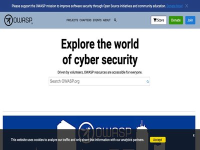

June 19, 2026 · 20 articles

Operation Endgame Disrupts Malware Network Linked to Major Ransomware Gang
June 19, 2026
SocGholish malware has been removed from 15,000 sites associated with Evil Corp hackers (Infosecurity Magazine)

Mastodon 4.6 adds profile Collections and two-factor controls
June 19, 2026
People who run accounts on the open source social network Mastodon can now group profiles together and share those groups across the web. The 4.6 release centers on a feature ca... (Help Net Security)

Cybersecurity Firms Impacted by Klue Supply Chain Attack
June 19, 2026
The hackers exfiltrated data from Salesforce instances of Klue customers, such as Huntress and Recorded Future. The post Cybersecurity Firms Impacted by Klue Supply Chain Attack... (SecurityWeek)
Google sets timeline for Android developer verification enforcement
June 19, 2026
Android’s developer verification protections will take effect on September 30, 2026, starting with users in Brazil, Indonesia, Singapore, and Thailand. Developers distributing a... (Help Net Security)
Accenture to buy Dragos, runZero, and NetRise in $4.2 billion cybersecurity deal
June 19, 2026
Accenture is expanding its position with the acquisition of a majority stake in Dragos and all of runZero and NetRise to deliver end-to-end operational technology (OT) security... (Help Net Security)

Salesforce Disables Klue App Integration After OAuth Token Abuse Exposes Customer Data
June 19, 2026
Salesforce has revealed that it disabled the Klue Battlecards app integration within its platform in response to a security incident impacting the competitive intelligence compa... (The Hacker News)
Confidence Lacks in Threat Detection Across Non-Email Channels like Slack and Teams
June 19, 2026
Half of cybersecurity leaders lack confidence in detecting threats on Slack, Teams and other non-email platforms, despite growing attacker focus (Infosecurity Magazine)

NY man charged after harassing college student with AI-generated nudes
June 19, 2026
A New York man faces cyberstalking charges after allegedly sharing AI-generated nude images and fabricated racist messages using fake social media profiles to harass a Georgia c... (BleepingComputer)

eBanking Phishing Delivered Through IPv4-Mapped IPv6 Address, (Fri, Jun 19th)
June 19, 2026
I detected an interesting phishing email this morning. It targets a major Belgian bank: (SANS ISC)
Cisco to Acquire WideField Security to Boost Splunk’s Agentic SOC
June 19, 2026
WideField will accelerate Agentic SOC capabilities by expanding the lens on threat investigation to include identity, credentials, sessions, and blast radius. The post Cisco to... (SecurityWeek)
BlackFog brings shadow AI visibility to macOS endpoints with ADX Vision
June 19, 2026
BlackFog has announced the general availability of ADX Vision for macOS, extending its shadow AI detection, governance, and prevention platform to Apple endpoints. With this rel... (Help Net Security)
15,000 WordPress Websites Cleaned Up in SocGholish Botnet Takedown
June 19, 2026
Law enforcement and private partners took down 106 SocGholish C&C servers and domains as part of Operation Endgame. The post 15,000 WordPress Websites Cleaned Up in SocGholish B... (SecurityWeek)
Apple Patches Beats Studio Buds Flaw Letting Nearby Attackers Spy via Microphone
June 19, 2026
Apple has updated its Beats Studio Buds wireless earbuds to patch a high-severity vulnerability that could be exploited by nearby hackers to eavesdrop on users. The vulnerabilit... (The Hacker News)
Your browser tab could become encrypted storage for someone else’s files
June 19, 2026
Decentralized storage networks already hand pieces of people’s data to strangers’ machines. The lasting question across these networks is whether the machine holding the data ca... (Help Net Security)

24 Billion Stolen Credentials Exposed in Massive Data Leak
June 19, 2026
24 Billion Records Left Open Online: Passwords, Emails, and Everything Else Exposed database with 24 Billion records revealed stolen credentials from infostealers, Telegram chan... (Security Affairs)
Companies are discarding the logs they need to catch a breach
June 19, 2026
Many large enterprises discard most of the log data their systems generate, and they do it on purpose to keep costs down. A Dynatrace survey of 450 senior IT leaders at large en... (Help Net Security)
Asia-Pacific scam networks generate nearly $40 billion a year
June 19, 2026
Cybercrime is taking a larger share of criminal activity in Asia and the Pacific. More than half of surveyed jurisdictions reported that cybercrime accounts for over 30% of all... (Help Net Security)
Splunk Enterprise Vulnerability Exploited in Attacks Days After Disclosure
June 19, 2026
CISA has given federal agencies only three days to patch CVE-2026-20253, which can be exploited for unauthenticated remote code execution. The post Splunk Enterprise Vulnerabili... (SecurityWeek)
New infosec products of the week: June 19, 2026
June 19, 2026
Here’s a look at the most interesting products from the past week, featuring releases from ArmorCode, Barracuda Networks, Blue Planet, Flip, Fortinet, Legit Security, Tigera, an... (Help Net Security)

Lost in relocation: analysis of a new loader distributing CASTLESTEALER
June 19, 2026
Find out how a new obfuscated loader evades static detection using .reloc section abuse, five anti-VM/language checks and MBA obfuscation to deliver infostealer malware via Goog... (Elastic Security Labs)
June 18, 2026 · 63 articles
Gentlemen ransomware uses multiple EDR killers to disable defenses
June 18, 2026
The Gentlemen ransomware-as-a-service (RaaS) is actively developing and maintaining a suite of endpoint detection and response (EDR) killers to help affiliates evade detection i... (BleepingComputer)
USB worm spreads crypto-stealing malware via Windows shortcut files
June 18, 2026
Threat actors targeting cryptocurrency wallets have been distributing clipboard-stealing malware with self-spreading capabilities and using the Tor network to conceal communicat... (BleepingComputer)

What Is SaaS Security Posture Management? SSPM Guide
June 18, 2026
Key takeaways SaaS security posture management (SSPM) is how you measure and enforce secure configuration and access across the SaaS apps your employees use every day. It answer... (Orca Security Blog)
F5 Patches Critical NGINX Vulnerabilities Enabling Unauthenticated Code Execution
June 18, 2026
F5 released emergency updates for critical NGINX flaws (CVE-2026-42530, CVE-2026-42055) that could enable unauthenticated code execution. F5 has issued out-of-band patches for m... (Security Affairs)
AI Agents vs. Agentless Security vs. Agent-based Security
June 18, 2026
Key Takeaways Demystifying AI Agents vs. Security Agents Few terms in cybersecurity have become more overloaded than “agent.” On one side, vendors are racing to introduce AI age... (Orca Security Blog)
FortiBleed leak exposes Fortinet VPN credentials for 73,000 devices.
June 18, 2026
A newly discovered data leak dubbed "FortiBleed" has exposed what appears to be a collection of Fortinet and FortiGate VPN credentials for 73,932 firewall URLs at organizations... (BleepingComputer)
No Exploits Required
June 18, 2026
Four decades of incident response experience suggest that exploits are often the symptom, not the root cause, of today’s cybersecurity failures. The post No Exploits Required ap... (SecurityWeek)

New Abuse of the ClickOnce Technology, Part 2: Stop Threat Actors from Clicking Once and Staying Forever
June 18, 2026
(CrowdStrike Blog)

Novo Nordisk Breach Exposes Software Development Pipeline Risk
June 18, 2026
A leaked GitHub token underscores what most organizations get wrong: Treating secrets management as a tooling problem rather than an identity problem. (Dark Reading)

Accelerate security investigations with Kiro CLI
June 18, 2026
When a security event occurs in your Amazon Web Services (AWS) environment, rapid response is critical. However security teams often struggle with time-consuming, manual process... (AWS Security Blog)
Operation Escaneo Signals Shift in LatAm Threat Landscape
June 18, 2026
The threat group's curious business model may combine opportunistic monetization alongside intel collection, without much coordination between the two. (Dark Reading)
Nintendo confirms data stolen in WebMD subsidiary cyberattack
June 18, 2026
Nintendo of America has confirmed to BleepingComputer that threat actors stole survey data from the third-party TinyPulse service used internally, but its systems were not compr... (BleepingComputer)

Close Encounters of the Human Kind
June 18, 2026
In the latest Threat Source, Hazel channels her inner Spielberg to explore why humans are delightfully irrational, reminding us that while security best practices are simple in... (Cisco Talos)

Build your own vulnerability harness
June 18, 2026
We break down the technical architecture behind our multi-stage vulnerability discovery harness and automated triage loop. Learn how we manage state controls, squash false posit... (Cloudflare Blog)

‘Popa’ Botnet Linked to Publicly-Traded Israeli Firm
June 18, 2026
For the past four years, a sprawling Android-based botnet called Popa has forced millions of consumer TV boxes to relay Internet traffic linked to advertising fraud, account tak... (KrebsOnSecurity)
Majority of Internet-Accessible REDCap Servers Outdated
June 18, 2026
These servers are regularly targeted by China-linked UNC6508 for initial access and backdoor deployment. The post Majority of Internet-Accessible REDCap Servers Outdated appeare... (SecurityWeek)
Spring 2026 SOC 1 and 2 reports are now available in OSCAL format
June 18, 2026
Amazon Web Services (AWS) is excited to release the Spring 2026 System and Organization Controls (SOC) 1 and 2 reports in machine-readable OSCAL format alongside the PDF version... (AWS Security Blog)
Cisco fixed a critical ISE vulnerability that lets attackers to gain root access
June 18, 2026
Cisco addressed CVE-2026-20181, a critical ISE vulnerability that lets authenticated admins execute commands and gain root access. Cisco addressed a critical command execution v... (Security Affairs)
ThreatsDay Bulletin: Claude Chat Abuse, NastyC2 npm Packages, Device-Code Phishing + 25 More Stories
June 18, 2026
The internet did not break this week. It got used exactly as designed, which is worse. Searches were siphoned through shady browser add-ons. AI chat links turned into malware de... (The Hacker News)

CISA Adds One Known Exploited Vulnerability to Catalog
June 18, 2026
CISA has added one new vulnerability to its Known Exploited Vulnerabilities (KEV) Catalog , based on evidence of active exploitation. CVE-2026-20253 Splunk Enterprise Missing Au... (CISA Current Activity)
Fake GitHub Stars and AI Videos Mask a Crypto Clipper
June 18, 2026
A Rust crypto clipper hides behind fake GitHub stars and AI-narrated YouTube videos (Infosecurity Magazine)

Google told researcher 'Nice catch!' Then denied bug bounty for flaw it still hasn't fixed
June 18, 2026
EXCLUSIVE 'Working as intended' for the win … again (The Register - Security)

Why Security Teams Need To Start Earlier
June 18, 2026
Security leaders are facing an unusual set of circumstances. The drumbeat for better security prioritization has been rising for years in boardrooms around the world. The desire... (Rapid7 Blog)
ICO Cautions Healthcare Worker After Princess of Wales Incident
June 18, 2026
Hospital insider escapes criminal prosecution after attempting to sell royal’s medical records (Infosecurity Magazine)

How Five PostgreSQL Optimizations Sped Up Our Dashboard
June 18, 2026
GitGuardian helps security teams detect leaked secrets across dozens of integrations, all converging in one place: our dashboard. As our data volume grew, some pages started tak... (GitGuardian Blog)
INC Ransomware Emerges as Major RaaS Threat in 2026 with 830+ Victims Since 2023
June 18, 2026
Cybersecurity researchers have charted the evolution of INC from an nascent ransomware-as-a-service (RaaS) operation to one of the most prolific cybercrime groups in 2026, claim... (The Hacker News)
DragonForce Hackers Abuse Microsoft Teams Relays to Hide Backdoor.Turn C2 Traffic
June 18, 2026
Threat actors associated with the DragonForce ransomware have been observed using a custom Go-based remote access trojan (RAT) called Backdoor.Turn to conceal command-and-contro... (The Hacker News)
Celebrating 12 years of Project Galileo
June 18, 2026
To mark the 12th anniversary of Project Galileo, Cloudflare has released its first comprehensive report analyzing cyberattacks against civil society. (Cloudflare Blog)
Get Out of Security Debt by Tackling the Exposure Problem
June 18, 2026
Teams digging out of security debt need to answer only two simple questions: Which vulnerabilities in our systems are exposed, and how long should they stay that way? (Dark Reading)
ShapedPlugin update flow hacked to infect WordPress sites
June 18, 2026
Multiple WordPress plugins from ShapedPlugin were compromised in a supply chain attack that distributed infected releases to paying customers via the vendor's official update sy... (BleepingComputer)

The President’s Executive Actions on AI Have a Lot to Say on Cybersecurity
June 18, 2026
The spotlight has been on frontier models, but the goals are more far reaching -- including supercharging cyber defense and remediating risk at machine speed (Wiz Blog)
Malware attacks strip Roblox developers of entire games
June 18, 2026
Hackers who once focused on stealing valuable Roblox items are now taking over entire games. Although Roblox operates the service, users can create and publish their own games o... (Help Net Security)
eSentire links AI-led penetration testing with MDR through Atlas Preempt
June 18, 2026
eSentire has announced the launch of Atlas Preempt, a component of the company’s Atlas Platform. Atlas Preempt performs continuous, AI-driven offensive testing against customer... (Help Net Security)
Cybercriminals Are Worried About AI Taking Their Jobs Too
June 18, 2026
Analysis of chatter on underground forums by Sophos finds that hackers fear AI could take work away from them (Infosecurity Magazine)
Orphaned AI Agents: How to Find Hidden Access Risks Inside Your Network
June 18, 2026
If an autonomous AI agent interacts with your company's core intellectual property today, can your security team instantly name the person who authorized it? For most enterprise... (The Hacker News)
Dream Raises $260 Million at $3 Billion Valuation
June 18, 2026
The Israeli startup provides sovereign AI and cyber defenses for governments and critical infrastructure. The post Dream Raises $260 Million at $3 Billion Valuation appeared fir... (SecurityWeek)
LATAM Infrastructure Hit by Fortinet and Ivanti Exploits
June 18, 2026
CloudSEK maps Operation Escaneo, a campaign hitting Latin American infrastructure via perimeter bugs (Infosecurity Magazine)

Embedding Forbidden Text in Spyware to Discourage AI Analysis
June 18, 2026
At least one malware developer is adding text about nuclear and biological weapons to their spyware, in an effort to stop automatic AI analysis. Details : The _index.js payload... (Schneier on Security)
Atlassian, Splunk Patch Critical Vulnerabilities
June 18, 2026
Splunk patched an OS command injection in AI Toolkit, while Atlassian fixed dozens of flaws in third-party dependencies. The post Atlassian, Splunk Patch Critical Vulnerabilitie... (SecurityWeek)
Rokarolla Banking Trojan Targets 200 Applications
June 18, 2026
The Android malware allows its operators to take control of infected devices and harvest sensitive information. The post Rokarolla Banking Trojan Targets 200 Applications appear... (SecurityWeek)
Critical Command Execution Vulnerability Patched in Cisco ISE
June 18, 2026
Insufficient validation of user input allows an attacker to gain access to the underlying OS and elevate their privileges to root. The post Critical Command Execution Vulnerabil... (SecurityWeek)
Welcome to your new telco job - here's sudo access to a database with full customer info stored in the clear
June 18, 2026
It happened at a major US telco in the early 2000s (The Register - Security)

Aikido and OWASP bring agentic Code Audit to the global AppSec community
June 18, 2026
Aikido Security and OWASP launch a new individual member benefit: pentester-grade code audits, powered by AI reasoning. Gent, Belgium [June 18th, 2026] Aikido Security, the all-... (OWASP)
Microsoft fixes Windows Server 2016 security update failures
June 18, 2026
Microsoft has fixed a known issue causing the June 2026 security updates to fail on Windows Server 2016 systems that weren't up to date. [...] (BleepingComputer)
Scripting the disassembler: Local agentic reverse engineering through vbdec’s live COM object model
June 18, 2026
Cisco Talos detailed a new approach to reverse engineering that pairs local AI agents with traditional analysis tools like the VB6 disassembler vbdec. Instead of awkwardly bolti... (Cisco Talos)
Microsoft Confirms RoguePlanet Zero-Day in Defender, Patch Under Development
June 18, 2026
Microsoft confirmed the RoguePlanet Defender zero-day (CVE-2026-50656), a privilege escalation flaw, and is developing a security patch. Microsoft has acknowledged the RoguePlan... (Security Affairs)
SailPoint to Acquire Entro in Reported $200 Million Deal
June 18, 2026
Israel-based Entro specializes in non-human identity and credential security solutions, and it will enable SailPoint to enhance its products. The post SailPoint to Acquire Entro... (SecurityWeek)
New 42Crunch plugin helps developers find and fix API vulnerabilities in GitHub Copilot
June 18, 2026
42Crunch has announced the availability of the 42Crunch API Security Testing Plugin for GitHub Copilot. This latest advance enables developers to continuously audit, test, remed... (Help Net Security)
Blue Planet helps service providers reduce risk with unified network change governance
June 18, 2026
Blue Planet is closing the governance gap in network operations by unveiling Blue Planet Configuration and Change Management (CCM), unifying device configuration, change, and li... (Help Net Security)
EU Gets a Head Start in Developing 6G Network Security
June 18, 2026
"Shield-6G" will combine AI threat detection, digital twins, honeypots, and more, to help carriers protect 6G networks against the threats of tomorrow. (Dark Reading)
Securing digital keys when your phone unlocks the car
June 18, 2026
In this interview with Help Net Security, Alysia Johnson, President of the Car Connectivity Consortium (CCC), explains how the CCC Digital Key has grown from a single-brand feat... (Help Net Security)
Google’s open standard for AI agents to discover and verify tools
June 18, 2026
AI agents depend on tools, skills, and other agents spread across many teams, organizations, and platforms. These capabilities live in separate systems with their own registries... (Help Net Security)
How security teams are getting credential visibility into developer endpoints
June 18, 2026
As we noted in our earlier analysis, attackers already know secrets are on your developers’ machines, the only question is whether security teams do. The supply chain attack cal... (Help Net Security)
What happens to oversight when AI agents write a lab’s own code
June 18, 2026
Inside the labs building frontier AI, a growing share of the coding gets done by the AI itself. These agents write, edit, and run software with light human oversight between ste... (Help Net Security)
AWS Continuum brings AI models to code vulnerability management
June 18, 2026
AWS Continuum for code vulnerabilities, a system built to handle a vulnerability across its lifecycle, from discovery through to a fix, is now available in gated preview. It rea... (Help Net Security)
Homebrew tightens tap security, begins work on its interface
June 18, 2026
Anyone who installs software through a third-party Homebrew tap runs Ruby code written by people outside the project, and that code runs without a sandbox. That risk sits at the... (Help Net Security)
ISC Stormcast For Thursday, June 18th, 2026 https://isc.sans.edu/podcastdetail/9978, (Thu, Jun 18th)
June 18, 2026
(SANS ISC)
Cyber offenses now account for around a third of all crime across Asia and South Pacific
June 18, 2026
Latest Interpol review shows how scams continue to dominate, and AI-enabled attackers prove too hot to handle for cash-strapped regions (The Register - Security)
The Behavior of Coordinated SSH Brute Force Attacks over the last three months [Guest Diary], (Wed, Jun 17th)
June 18, 2026
[This is a Guest Diary by Adam Nason, an ISC intern as part of the SANS.edu BACS program] (SANS ISC)
Leak confirms OpenAI is testing a ChatGPT for Science subscription
June 18, 2026
OpenAI appears to be testing a new subscription and experience for science use cases, but it's unclear if it'll be available to everyone regardless of their background. [...] (BleepingComputer)

Entra Agent ID: Inside a cross-tenant agent compromise
June 18, 2026
Continuing our Agent ID series, this post demonstrates how a privileged agent could be compromised through its third-party blueprint. This leads to a cross-tenant incident simil... (Datadog Security Labs)

Chainguard is named a Leader in the 2026 Gartner®️ Magic Quadrant™️ for Software Supply Chain Security
June 18, 2026
Chainguard named a Leader in the 2026 Gartner® Magic Quadrant™ for Software Supply Chain Security, recognized for vision and secure-by-default innovation. (Chainguard Unchained)
Introducing the Chainguard cinc-auditor image: STIG scanning for Chainguard Containers, ready to run
June 18, 2026
Chainguard launches a ready-to-run STIG scanner with a built-in GPOS SRG InSpec profile, simplifying compliance scans for containers and FedRAMP workflows. (Chainguard Unchained)
June 17, 2026 · 37 articles
Malicious JetBrains Plugins Steal AI API Keys as Chrome Extensions Capture Chatbot Chats
June 17, 2026
Cybersecurity researchers have flagged a "coordinated malware campaign" on the JetBrains Marketplace that has published no less than 15 malicious plugins capable of exfiltrating... (The Hacker News)

npm Supply Chain Cryptocurrency Malware
June 17, 2026
What is the Attack? Researchers have identified a large-scale software supply chain campaign targeting the npm ecosystem, leveraging malicious JavaScript packages to distribute... (FortiGuard Labs)
Sweeping Credential-Harvesting Heist Compromises 30K+ Fortinet Devices
June 17, 2026
Attackers are actively targeting various sectors across nearly 200 countries and already have compiled a list of working credentials for tens of thousands of compromised devices. (Dark Reading)
Cloud Security LIVE 2026: Top 10 Takeaways CISOs Can Use Now (and What to Do Next)
June 17, 2026
Earlier this year Cloud Security LIVE 2026 brought together CISOs, security operators, and industry leaders to tackle the same pressure we’re all feeling: security expectations... (Orca Security Blog)
After Executive Order 14409: Next Steps for Securing AI
June 17, 2026
(CrowdStrike Blog)
WitnessAI Agentic Control secures AI agents, tools, and MCP server access
June 17, 2026
WitnessAI has announced extended agentic security capabilities that govern how AI agents interact with enterprise systems, tools, and Model Context Protocol (MCP) servers. With... (Help Net Security)
INC Ransomware Thrives by Mastering the Basics
June 17, 2026
And one of those basics is focusing on sectors where a ransomware disruption creates immediate pressure to pay up, like with healthcare. (Dark Reading)
Bringing more agent harnesses and frameworks to Cloudflare, starting with Flue
June 17, 2026
The Agents SDK is now a runtime any agent framework can build on. Today we're opening up the Agents SDK primitives, with Flue as a first framework targeting Agents SDK, and roll... (Cloudflare Blog)
Low-skilled attacker used Claude, Codex to breach 14 companies
June 17, 2026
Researchers have long warned that AI agents could lower the skill floor for offensive cyber operations, and a recent report by OALABS (Open Analysis) researchers bears that out.... (Help Net Security)
Junior Hacker Used Tailscale and OpenSSH to Keep Access After His C2 Went Offline
June 17, 2026
A French-speaking attacker broke into a small French automotive business, planted a keylogger, and stole banking and email credentials. Ordinary stuff, until one move near the e... (The Hacker News)
Introducing AWS Continuum: Security at machine speed
June 17, 2026
What we believe We’ve been thinking deeply about enterprise security. The operating model that served us for the past decade (collect telemetry, store it, query it, build dashbo... (AWS Security Blog)
The Red Agent POV: How it Reasoned its Way to SSRF
June 17, 2026
Part 1: How the Red Agent uncovered a multi-step attack chain allowing SSRF-to-Local-File-Read on GCP Cloud Run (Wiz Blog)
Introducing the Red Agent POV Series
June 17, 2026
An inside look at how the Red Agent, our AI-Powered Attacker, uncovers complex, exploitable risks in the wild (Wiz Blog)
North Korean Hiring Fraud Runs on AI and US Laptop Farms
June 17, 2026
Nisos infiltrated a North Korean IT-worker fraud cell running on AI interviews and a US laptop farm (Infosecurity Magazine)
Webinar Today: How Modern Breaches Bypass MFA and Evade Detection
June 17, 2026
Attendees will learn how attackers evade conventional detection methods, why legacy MFA alone is no longer sufficient, and how organizations can strengthen their defenses. The p... (SecurityWeek)
Why Account Takeovers Are Rising and How to Stop Them
June 17, 2026
Account takeovers are rising as attackers bypass traditional defenses through phishing, session hijacking, and MFA fatigue. Specops Software explores how device trust and contin... (BleepingComputer)
Serverless Phishing Kit on GitHub Targets Mexican Banks
June 17, 2026
GitBait phishing kit abuses GitHub Pages and the SheetBest API to steal Mexican banking credentials (Infosecurity Magazine)
The Complete Guide to LLM Security: Risks, Best Practices, and Solutions
June 17, 2026
According to IBM Institute for Business Value’s 2024 research, 82% of executives say secure and trustworthy AI is essential to their business, but only 24% of current generative... (Orca Security Blog)
Homebrew 6.0 released with new security mechanism, Linux sandbox and more
June 17, 2026
Homebrew was "less vulnerable 10 years ago than npm is today," project lead tells us (The Register - Security)
Sensitive Enterprise Data Uploads to AI Models Double in a Year
June 17, 2026
The rise of AI-assistants and applications in the enterprise has seen a 93% increase in employees attempting to upload sensitive data, bringing security challenges (Infosecurity Magazine)
Introducing the Cloudflare One stack: agent-powered deployment
June 17, 2026
The Cloudflare One stack is a library of agent skills that gives any AI agent the knowledge it needs to plan, deploy, and manage a Zero Trust environment - no migration calls re... (Cloudflare Blog)
Flip expands platform with digital identity, no-code apps, and AI automation
June 17, 2026
Flip has announced Frontline Identity and Flip Fusion, two new offerings that help organizations securely connect frontline employees to enterprise systems, applications and AI-... (Help Net Security)
AI Threats and Alert Fatigue Challenge Cybersecurity Teams
June 17, 2026
Filigran survey at Infosecurity Europe 2026 reveals AI-powered attacks as the top concern, with false positives, alert fatigue and manual processes draining security teams (Infosecurity Magazine)
ArmorCode helps product manufacturers prepare for EU Cyber Resilience Act requirements
June 17, 2026
ArmorCode has announced new Cyber Resilience Act (CRA) capabilities within the ArmorCode Agentic AI Platform. The capabilities help manufacturers of products with digital elemen... (Help Net Security)
Legit Security brings agentic AI to AppSec remediation and risk reduction
June 17, 2026
Legit Security has launched new remediation agents that independently prioritize issues, generate fixes, open pull requests, and confirm results using context learned from each... (Help Net Security)
Tenet Security Emerges From Stealth With $6 Million Seed Funding
June 17, 2026
Tenet aims to detect and stop dangerous AI agentic behavior in real time. The post Tenet Security Emerges From Stealth With $6 Million Seed Funding appeared first on SecurityWeek . (SecurityWeek)
Adversarial Exposure Validation Turns Security Visibility into Confident Prioritization
June 17, 2026
For security teams, the findings never stop, but confidence in knowing which ones matter is becoming harder to maintain. The problem is no longer visibility. It's validation. Se... (The Hacker News)
Rockwell Automation Patches Vulnerabilities in ICS Controllers and Software
June 17, 2026
The industrial automation giant has fixed security holes in Logix, CompactLogix, Flex, RSLinx, and FactoryTalk products. The post Rockwell Automation Patches Vulnerabilities in... (SecurityWeek)
Malware à la Mode: Tracking Dropping Elephant Tradecraft Through a China-Themed Loader Chain
June 17, 2026
Executive summary Rapid7 researchers have identified a sophisticated malware campaign attributed to the threat actor "Dropping Elephant," characterized by the use of a China-the... (Rapid7 Blog)
AI Use by the US Government
June 17, 2026
On 14 April, the Trump administration quietly acknowledged the widespread use of AI to automate government processes. The office of management and budget (OMB) disclosed a stagg... (Schneier on Security)
The Top 10 Attack Surface Exposures in 2026
June 17, 2026
Breaches don't always start with a zero-day. An exposed admin panel can get brute-forced, or credentials reused from a previous attack. But when a vulnerability does drop - like... (The Hacker News)
Helpdesk scammers are making house calls to make their lies feel more real
June 17, 2026
15-year-old among six arrested after Dutch cops target suspected bank fraud call center (The Register - Security)
The Chainguard Athena coalition already shipped 2,000 patches across 500 open source projects
June 17, 2026
Chainguard launched Athena, an industry coalition that pools open source vulnerability findings and remediates them under embargo before public disclosure. The group went live w... (Help Net Security)
EdTech Faces a Cybersecurity Crisis: Data Breaches Surge
June 17, 2026
EdTech firms face rising cyberattacks as ShinyHunters and FulcrumSec target schools, exposing sensitive data and disrupting services. Resecurity (USA) warns the education techno... (Security Affairs)
Oracle’s Second Monthly Security Updates Deliver 245 Patches
June 17, 2026
Oracle has released its June 2026 Critical Security Patch Update to fix vulnerabilities in Communications, EBS, Enterprise Manager and other products. The post Oracle’s Second M... (SecurityWeek)
FulcrumSec Targets Novo Nordisk, Leaks Clinical and Research Data
June 17, 2026
FulcrumSec leaked data stolen from Novo Nordisk, claiming to have exfiltrated 1.3TB, including clinical records and AI research assets. On June 15, 2026, a data-theft extortion... (Security Affairs)
Staffing Is Top SOC Challenge Even as AI Proliferates, Says SANS
June 17, 2026
SANS Institute study finds few SOCs have built AI into defined workflows, despite widespread adoption (Infosecurity Magazine)